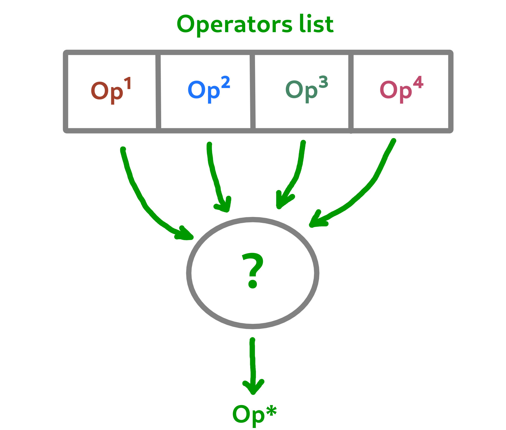

7. Operator choices¶
The policy feature of Macop enables to choose the next operator to apply during the search process of the algorithm based on specific criterion.
7.1. Why using policy ?¶
Sometimes the nature of the problem and its instance can strongly influence the search results when using mutation operators or crossovers. Automated operator choice strategies have also been developed in the literature, notably based on reinforcement learning.
The operator choice problem can be seen as the desire to find the best solution generation operator at the next evaluation that will be the most conducive to precisely improving the solution.
{kind=link}
Note
An implementation using reinforcement learning has been developed as an example in the macop.policies.reinforcement module.
However, it will not be detailed here. You can refer to the API documentation for more details.
7.2. Custom policy¶
In our case, we are not going to exploit a complex enough implementation of a policy. Simply, we will use a random choice of operator.
First, let’s take a look of the policy abstract class available in macop.policies.base:
class Policy():
def __init__(self, operators):
self.operators = operators
@abstractmethod
def select(self):
"""
Select specific operator
"""
pass
def apply(self, solution):
"""
Apply specific operator to create new solution, compute its fitness and return it
"""
...
def setAlgo(self, algo):
"""
Keep into policy reference of the whole algorithm
"""
...
Policy instance will have of operators attributs in order to keep track of possible operators when selecting one.
Here, in our implementation we only need to specify the select abstract method. The apply method will select the next operator and return the new solution.
"""
module imports
"""
from macop.policies.base import Policy
class RandomPolicy(Policy):
def select(self):
"""
Select specific operator
"""
# choose operator randomly
index = random.randint(0, len(self.operators) - 1)
return self.operators[index]
We can now use this operator choice policy to update our current solution:
"""
Operators instances
"""
mutator = SimpleMutation()
crossover = SimpleCrossover()
"""
RandomPolicy instance
"""
policy = RandomPolicy([mutator, crossover])
"""
Current solutions instance
"""
solution1 = BinarySolution.random(5)
solution2 = BinarySolution.random(5)
# pass two solutions in parameters in case of selected crossover operator
new_solution = policy.apply(solution1, solution2)
Caution
By default if solution2 parameter is not provided into policy.apply method for crossover, the best solution known is used from the algorithm linked to the policy.
Updating solutions is therefore now possible with our policy. It is high time to dive into the process of optimizing solutions and digging into our research space.